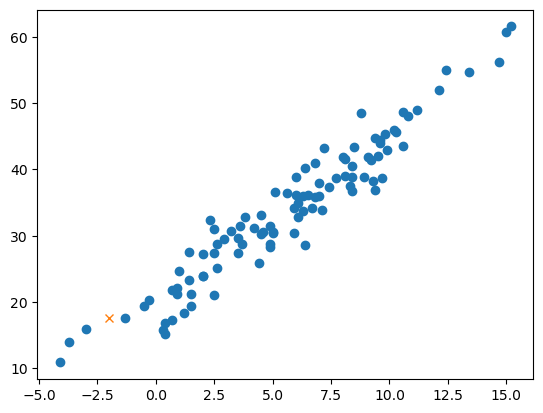
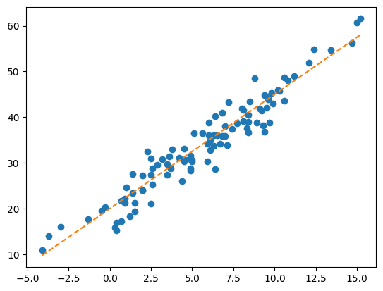
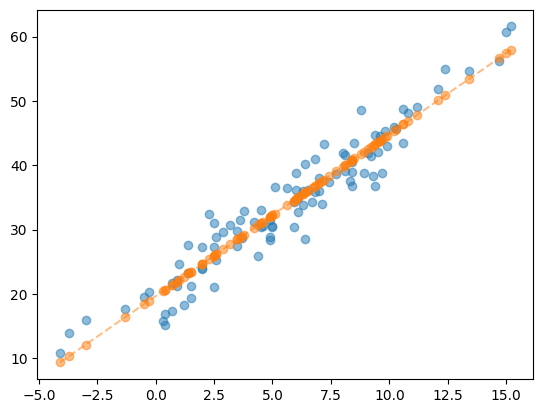
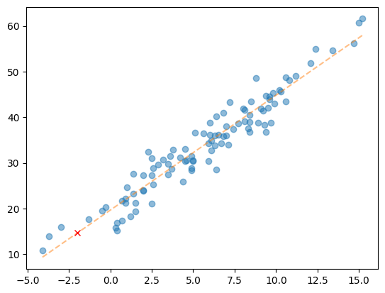

import numpy as np
import pandas as pd
import matplotlib.pyplot as plt
import sklearn.linear_model03wk-009: 아이스크림, 선형회귀
1. 강의영상
2. Imports
3. Data
- 전주시의 기온 불러오기
temp = pd.read_csv('https://raw.githubusercontent.com/guebin/DV2022/master/posts/temp.csv').iloc[:,3].to_numpy()[:100]
temp.sort()temp # 전주시의 기온, 100개array([-4.1, -3.7, -3. , -1.3, -0.5, -0.3, 0.3, 0.4, 0.4, 0.7, 0.7,
0.9, 0.9, 1. , 1.2, 1.4, 1.4, 1.5, 1.5, 2. , 2. , 2. ,
2.3, 2.5, 2.5, 2.5, 2.6, 2.6, 2.9, 3.2, 3.5, 3.5, 3.6,
3.7, 3.8, 4.2, 4.4, 4.5, 4.5, 4.6, 4.9, 4.9, 4.9, 5. ,
5. , 5.1, 5.6, 5.9, 5.9, 6. , 6. , 6.1, 6.1, 6.3, 6.3,
6.4, 6.4, 6.5, 6.7, 6.8, 6.8, 7. , 7. , 7.1, 7.2, 7.4,
7.7, 8. , 8.1, 8.1, 8.3, 8.4, 8.4, 8.4, 8.5, 8.8, 8.9,
9.1, 9.2, 9.3, 9.4, 9.4, 9.5, 9.6, 9.6, 9.7, 9.8, 9.9,
10.2, 10.3, 10.6, 10.6, 10.8, 11.2, 12.1, 12.4, 13.4, 14.7, 15. ,
15.2])- 아래와 같은 모형을 가정하자.
\[\textup{아이스크림 판매량} = 20 + \textup{온도} \times 2.5 + \textup{오차(운)}\]
np.random.seed(43052)
eps = np.random.randn(100)*3 # 오차
icecream_sales = 20 + temp * 2.5 + eps plt.plot(temp,icecream_sales,'o')
실제로 저런 모형이 맞느냐? 모름.. (실제모형은 알게뭐임? 그렇게 가정하면 된다.)
- 주어진 자료: 우리는 아래를 관측했다고 생각하자.
df = pd.DataFrame({'temp':temp,'sales':icecream_sales})
df| temp | sales | |
|---|---|---|
| 0 | -4.1 | 10.900261 |
| 1 | -3.7 | 14.002524 |
| 2 | -3.0 | 15.928335 |
| 3 | -1.3 | 17.673681 |
| 4 | -0.5 | 19.463362 |
| ... | ... | ... |
| 95 | 12.4 | 54.926065 |
| 96 | 13.4 | 54.716129 |
| 97 | 14.7 | 56.194791 |
| 98 | 15.0 | 60.666163 |
| 99 | 15.2 | 61.561043 |
100 rows × 2 columns
4. 게임셋팅
- 주어진 자료는 아래와 같다.
df| temp | sales | |
|---|---|---|
| 0 | -4.1 | 10.900261 |
| 1 | -3.7 | 14.002524 |
| 2 | -3.0 | 15.928335 |
| 3 | -1.3 | 17.673681 |
| 4 | -0.5 | 19.463362 |
| ... | ... | ... |
| 95 | 12.4 | 54.926065 |
| 96 | 13.4 | 54.716129 |
| 97 | 14.7 | 56.194791 |
| 98 | 15.0 | 60.666163 |
| 99 | 15.2 | 61.561043 |
100 rows × 2 columns
- 편의상 아래와 같은 기호를 도입하자.
- (
df.temp[0],df.temp[1], … ,df.temp[99]) = \((x_1,x_2,\dots,x_{100})=(-4.1,-3.7,\dots,15.2)\) - (
df.sales[0],df.sales[1], … ,df.sales[99]) = \((y_1,y_2,\dots,y_{100})=(10.90,14.00, \dots,61.56)\)
- 우리는 이 자료 \(\big\{(x_i,y_i)\big\}_{i=1}^{100}\) 를 바탕으로 어떠한 “패턴”을 발견하여 새로운 \(x\)에 대한 예측값을 알고 싶다.
A. 질문
- 질문: 기온이 \(x=-2.0\) 일 때 아이스크림을 얼마정도 판다고 보는게 타당할까?
B. 답1
- \(x=-2.0\) 근처의 데이터를 살펴보자.
df[(-3.0 < df.temp) & (df.temp < -1.0)]| temp | sales | |
|---|---|---|
| 3 | -1.3 | 17.673681 |
대충 17.67 근처이지 않을까?..
C. 답2
- 자료를 바탕으로 그림을 그려보자.
plt.plot(df.temp,df.sales,'o')
plt.plot([-2.0],[17.67],'x')
- 저거 보다 못팔 것 같은데?
D. 아이디어
- 선을 기가 막히게 그어서 추세선을 만들고, 그 추세선 위의 점으로 예측하자.
- 속마음: 사실 추세선을 알고 있긴함
plt.plot(df.temp,df.sales,'o')
plt.plot(df.temp,20+df.temp*2.5,'--')
- 사실 \(y=20+2.5x\) 라는 추세선을 그으면 된다는 것을 알고 있다.
- 그래서 \(x=-2\) 이라면 \(y=20-2.5\times 2=15\) 라고 보는게 합리적임. (물론 오차가 있을 수 있지만 그건 운이므로 어쩔수 없는것임, 랜덤으로 뭐가 나올지까지 맞출 수는 없음1)
1 만약 그렇다면 랜덤이 아니겠지?
- 그렇지만 우리는 사실 \(20, 2.5\) 라는 숫자를 모른다. (이 숫자만 안다면 임의의 \(x\)에 대한 \(y\)값을 알 수 있을 텐데…)
- 게임셋팅
- 원래게임: 임의의 \(x\)에 대하여 합리적인 \(y\)를 잘 찾는 게임
- 변형된게임: \(20,2.5\) 라는 숫자를 잘 찾는 게임, 즉 데이터를 보고 최대한 \(y_i \approx ax_i+b\) 이 되도록 \(a,b\)를 잘 선택하는 게임
5. 분석
A. 데이터
- 변수 설정
X = df[['temp']] # 독립변수, 설명변수, 피쳐
y = df[['sales']] # 종속변수, 반응변수, 타겟 plt.plot(X,y,'o')
- 질문: 기온이 \(x=-2.0\) 일 때 아이스크림을 얼마정도 판다고 보는게 타당할까?
df[(-3.0 < df.temp) & (df.temp < -1.0)]| temp | sales | |
|---|---|---|
| 3 | -1.3 | 17.673681 |
- 답1: 대충 17.67 근처이지 않을까?..
- 답2: 17.67 보다 작지 않을까?
- 아이디어: 추세선을 그리고 거기서 예측해보면 어떨까?
- 데이터를 학습하여 추세선을 적절히 그릴 수 있고, 그려진 추세선으로 예측까지 해줄수 있는 아이(predictor)를 만들자.
B. Predictor 생성
predictr = sklearn.linear_model.LinearRegression()
predictr LinearRegression()In a Jupyter environment, please rerun this cell to show the HTML representation or trust the notebook.
On GitHub, the HTML representation is unable to render, please try loading this page with nbviewer.org.
LinearRegression()
- linear regression 이라는 방법으로 추세선을 만들고 예측하는 아이(predictor)를 만드는 코드
C. 학습 (fit, learn)
predictr.fit(X,y)LinearRegression()In a Jupyter environment, please rerun this cell to show the HTML representation or trust the notebook.
On GitHub, the HTML representation is unable to render, please try loading this page with nbviewer.org.
LinearRegression()
D. 예측 (predict)
- Predictor: 데이터를 살펴보니 원래 true는 이럴것 같아요
yhat = predictr.predict(X)plt.plot(X,y,'o',alpha=0.5)
plt.plot(X,yhat, 'o--',alpha=0.5)
- 최규빈: 저런 추세선을 그었다면, \(y=ax+b\) 꼴의 식에서 \(a\), \(b\)를 적당한 값으로 찾았다는 의미인데, 그 값은 어디있지?
- Predictor: 아래에 있어요
a = predictr.coef_,
b = predictr.intercept_a,b((array([[2.51561216]]),), array([19.66713127]))- 최규빈: 확인해보자..
(df.temp * 2.51561216 + 19.66713127)[:5], yhat[:5](0 9.353121
1 10.359366
2 12.120295
3 16.396835
4 18.409325
Name: temp, dtype: float64,
array([[ 9.35312141],
[10.35936628],
[12.12029479],
[16.39683546],
[18.40932519]]))- 새로운 데이터 \(x=-2\) 에 대한 예측 (1) – 수식위주로
2.51561216*(-2) + 19.6671312714.635906949999999plt.plot(X,y,'o',alpha=0.5)
plt.plot(X,yhat,'--',alpha=0.5)
plt.plot([-2],[14.635906949999999],'xr')
- 새로운 데이터 \(x=-2\) 에 대한 예측 (2) – 코드위주로 (\(\star\))
Xnew = pd.DataFrame({'temp':[-2.0]})predictr.predict(Xnew)array([[14.63590695]])plt.plot(X,y,'o',alpha=0.5)
plt.plot(X,yhat,'--',alpha=0.5)
plt.plot(Xnew, predictr.predict(Xnew),'xr')